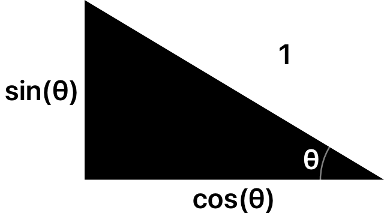
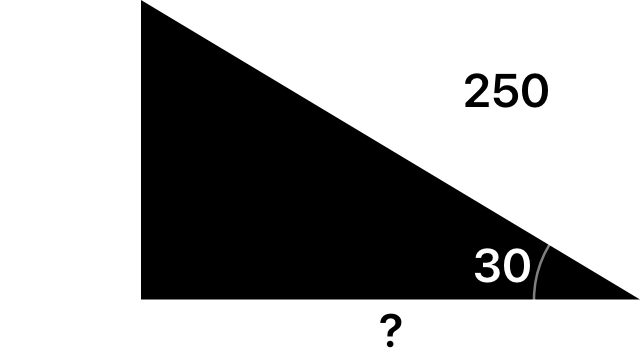

三角関数について
三角関数と3D
3Dを作るときに、三角関数はたくさん使用すると思います。そのときに、sin, cos, tanの式を少し変形してわかりやすく捉えると、3Dをさらに簡単に作ることができると思います。
一般的な三角関数の表し方
三角関数は一般的に直角三角形の高さをa, 横をb, 斜辺をc, 角度をθとしたとき、
sin
a/c
cos
b/c
tan
a/b
と表すことができます。
sin, cos
高さをa, 横をb, 斜辺をcとします。
まず、sinの式は、a/cです。このcの部分を1とします。すると、分母, 分子をそれぞれ分母(斜辺)の値で割り、(a/c)/(c/c)となります。この時、sinの結果であるa/cと変形した後の(a/c)/(c/c)は分母, 分子に同じ値をかけただけなので、同じ結果が返ってくるということができます。
このことから、c/cは、分母である斜辺を1にする操作のため、sinは、斜辺を1とした時の高さということができます。
cosも同様に行う
cosの式は、b/cのため、先ほどの式のaをbに変えるだけです。
すると、cosは、斜辺を1とした時の横ということができます。
tan
tanは他の2つとは少し計算方法が違います。tanは3Dではあまり使いませんが、一緒に覚えておくと楽です。
tanの式は、a/bです。分母のb, 分子のaをそれぞれ分母で割るため、tanは、横を1とした時の高さと言えます。
三角関数を使った例題
例題 1
1つ目は下の図のように、斜辺, 角度がわかっている状態です。
高さを知りたいときは、斜辺を1とした時の高さであるsinを使います。しかし、この問題では斜辺が1ではなく、250となっています。このようなときは、図形をそのまま拡大します。今回は、斜辺の長さが1の図形の250倍のため、結果もそのまま250倍することで、解くことができます。
そのため、この問題の答えは250sin(30)になります。
例題 2
2つ目は、斜辺, 角度がわかっている状態です。
横の場合は、斜辺を1とした時の横であるcosを使います。この問題では、斜辺が250となっています。
そのため、250倍に拡大してこの問題の答えは250cos(30)になります。
例題 3
3つ目は、横, 角度がわかっている状態です。
横がわかっていて高さを知りたいときは、横を1とした時の高さであるtanを使います。sin, cosと同じように、この問題では横が250となっているため、250倍にします。
そのため、この問題の答えは250tan(30)になります。
高さがわかっているときのtanの使い方
前のtanを使った問題では、高さを求めましたが、逆に高さがわかっていて、横を求めたい場合です。
この場合は、tanの横を1とした時の高さというものを、高さが1のときに変えます。tanの変形した後の式は、(a/b)/(b/b)でしたが、その式を今度は分母と分子のどちらともa/bで割ります。
すると式は、{(a/b)/(a/b)}/{(b/b)/(a/b)} = (b/b)/(a/b)となり、変換前の式の(a/b)と(b/b)を逆にした式になり、高さを基準にするには分母と分子を入れ替える逆数にすれば良い。ということがわかります。
つまり、高さ*{1/tan(角度)}で横の長さが出せます。